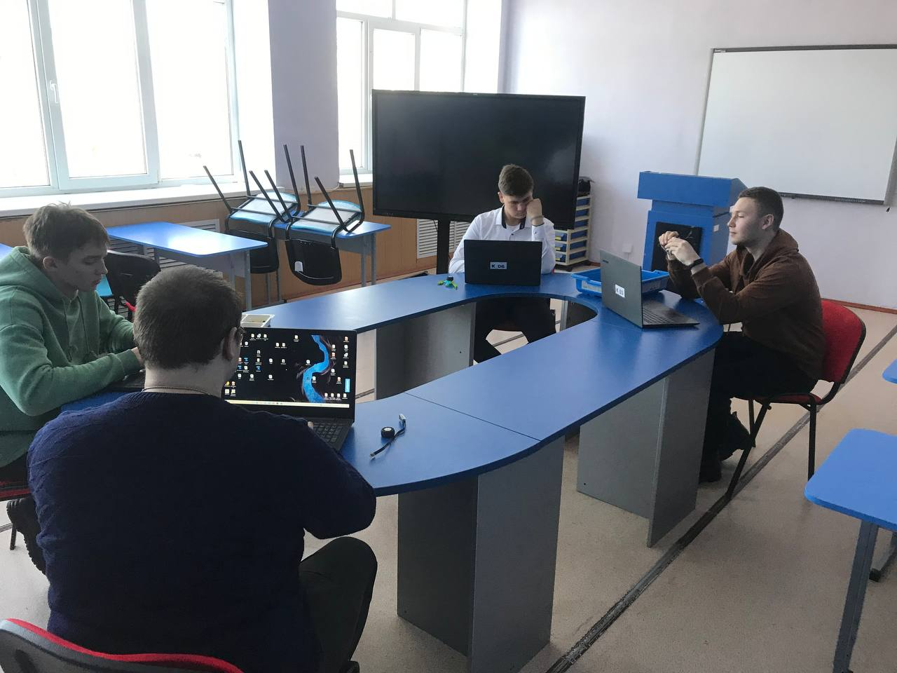

Общие правила подачи и рассмотрения апелляций по результатам вступительных испытаний
1. По результатам вступительного испытания поступающий имеет право подать в апелляционную комиссию письменное апелляционное заявление о нарушении, по его мнению, установленного порядка проведения испытания и (или) несогласии с его результатами (далее — апелляция).
2. Рассмотрение апелляции не является пересдачей вступительного испытания. В ходе рассмотрения апелляции проверяется только правильность оценки результатов сдачи вступительного испытания.
3. Апелляция подается поступающим лично на следующий день после объявления результата вступительного испытания. При этом поступающий имеет право ознакомиться со своей работой, выполненной в ходе вступительного испытания, в порядке, установленном образовательной организацией. Приемная комиссия обеспечивает прием апелляций в течение всего рабочего дня.
Рассмотрение апелляций проводится не позднее следующего дня после дня ознакомления с работами, выполненными в ходе вступительных испытаний.
4. В апелляционную комиссию при рассмотрении апелляций рекомендуется включать в качестве независимых экспертов представителей органов исполнительной власти субъекта Российской Федерации, осуществляющих управление в сфере образования.
5. Поступающий имеет право присутствовать при рассмотрении апелляции. Поступающий должен иметь при себе документ, удостоверяющий его личность, и экзаменационный лист.
6. С несовершеннолетним поступающим (до 18 лет) имеет право присутствовать один из родителей или законных представителей, кроме несовершеннолетних, признанных в соответствии с законом полностью дееспособными до достижения совершеннолетия.
7. После рассмотрения апелляции выносится решение апелляционной комиссии об оценке по вступительному испытанию (как в случае ее повышения, так и понижения или оставления без изменения).
8. При возникновении разногласий в апелляционной комиссии проводится голосование, и решение утверждается большинством голосов.
Оформленное протоколом решение апелляционной комиссии доводится до сведения поступающего (под роспись).
Реализуемые образовательные программы:

Информационные системы и программирование
Специальность «Информационные системы и программирование» включает в себя широкий спектр сфер профессиональной деятельности, таких как:
- внедрение и сопровождение информационных систем;
- тестирование информационных систем по заданным сценариям;
В рамках обучения идёт подготовка специалистов, которые осваивают навыки по обработке и переработке древесины.
Обучение включает изучение основ деревообработки, технологий распиловки, фрезеровки, шлифовки, склеивания и других операций по обработке древесины. Студенты получают практические навыки по работе с деревообрабатывающим оборудованием, выбору и применению различных материалов и инструментов.